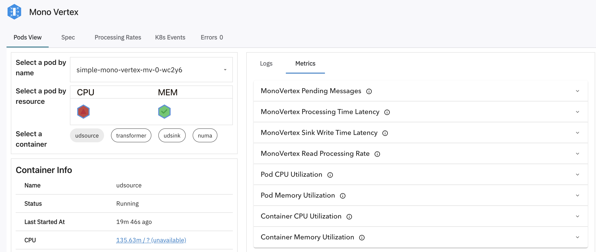
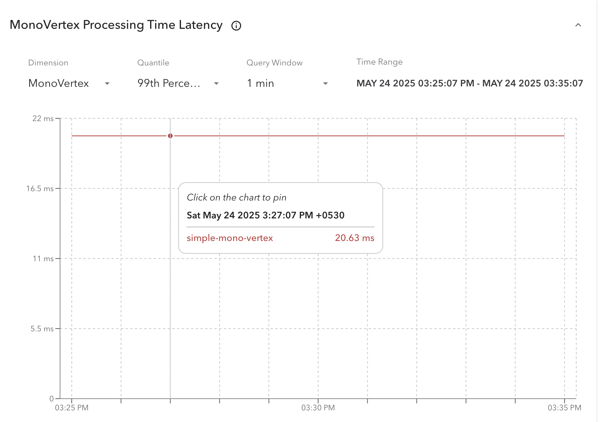
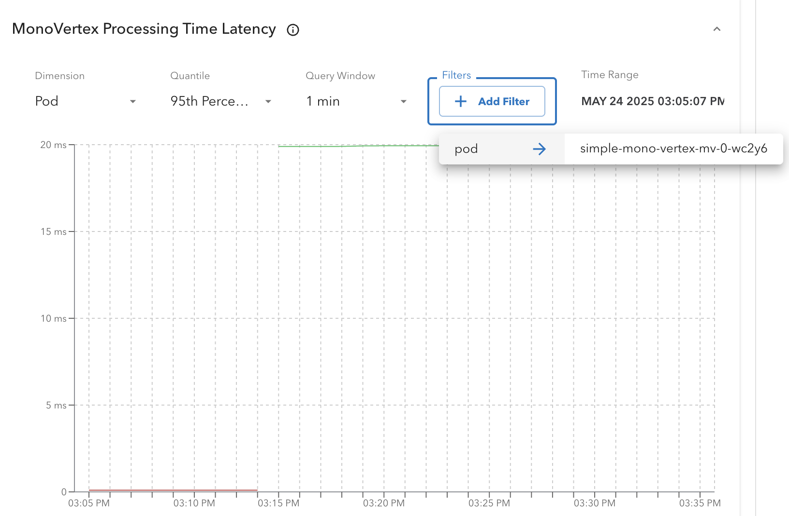
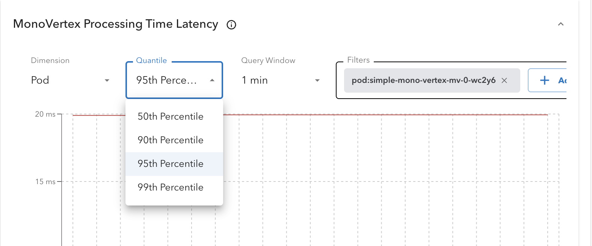
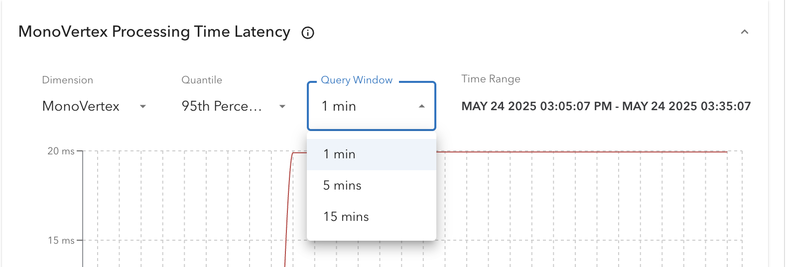
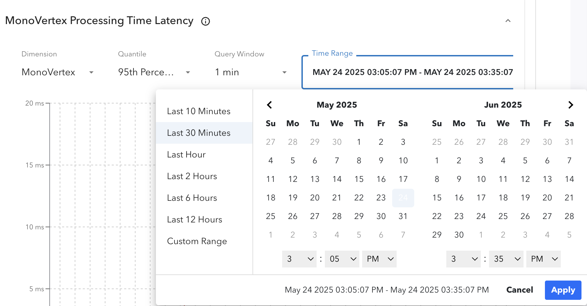

Metrics Tab¶
Numaflow provides a comprehensive set of Prometheus metrics, enabling users to monitor their pipelines effectively and set up alerts as needed. This feature enhances the debugging experience by offering contextual insights directly within the UI. By leveraging these metrics, users can identify and resolve issues more efficiently, ensuring smoother pipeline operations.
Prerequisites¶
Before visualizing metrics in the UI, ensure the following requirements are met:
- Prometheus Server Setup: A Prometheus server must be configured and running. Refer to the Prometheus Operator Installation Guide for detailed instructions.
- Service Monitors: Configure Service/Pod Monitors for scraping pipeline/monovertex metrics. Refer to this section for configuration details.
- Basic Knowledge of PromQL: Familiarity with PromQL (Prometheus Query Language) is recommended to effectively query and interpret the metrics.
Meeting these prerequisites will help you make the most of the metrics visualization and monitoring features in Numaflow.
Metrics Configuration¶
To visualize metrics in the UI, you need to configure them using a ConfigMap. Numaflow provides a default ConfigMap that includes a variety of pre-configured metrics. These metrics cover essential pipeline operations and also include custom metrics, such as CPU and memory usage.
You can customize this ConfigMap to add or modify metrics based on your specific requirements. For example, you can include additional Prometheus metrics relevant to your use case.
Refer to the Numaflow Metrics Documentation for more details on available metrics and their usage.
Current Configuration Snippet¶
Below is a snippet of the default ConfigMap configuration:
apiVersion: v1
kind: ConfigMap
metadata:
name: numaflow-server-metrics-proxy-config
data:
config.yaml: |
url: http://prometheus-operated.monitoring.svc.cluster.local:9090
patterns:
- name: vertex_gauge
objects:
- vertex
title: Vertex Gauge Metrics
description: This pattern represents the gauge metrics for a vertex across different dimensions.
expr: |
sum($metric_name{$filters}) by ($dimension, period)
params:
- name: start_time
required: false
- name: end_time
required: false
metrics:
- metric_name: vertex_pending_messages
display_name: Vertex Pending Messages
metric_description: Tracks the total number of messages waiting to be processed over varying time frames (e.g., 1min, 5min, 15min).
required_filters:
- namespace
- pipeline
- vertex
dimensions:
- name: pod
filters:
- name: pod
required: false
- name: period
required: false
- name: vertex
filters:
- name: period
required: false
Key Definitions¶
Prometheus metrics are categorized into three main types: Histogram, Gauge, and Counter. The configuration provided above groups metrics of a similar type under a single pattern, making it more generic and easier to manage.
-
url: The
urlis a required field that specifies the Prometheus service endpoint to which the metrics proxy will connect. If theurlis not set or is incorrectly configured, the Metrics Tab will not be displayed in the UI.- Example: If you set up a local Prometheus operator using Helm, the
urlwould look like this:http://my-release-kube-prometheus-prometheus.default.svc.cluster.local:9090
- Example: If you set up a local Prometheus operator using Helm, the
-
patterns: A list of patterns that group metrics of a similar type.
- name: The name of the pattern.
- objects: Specifies the object type, which can either be
vertexormono-vertex. For pipelines, the object isvertex, and for MonoVertex, the object ismono-vertex. - title: The title of the pattern.
- description: A description of the pattern.
- expr: The PromQL expression used to construct queries, with placeholders for dynamic values.
-
params: Common parameters for all metrics within the pattern. These may include:
- start_time: The start time for the PromQL query (optional).
- end_time: The end time for the PromQL query (optional).
- duration: The query window (required for histograms).
- quantile: The quantile value (required for histograms). The quantiles can be 0.99, 0.95, 0.90, or 0.50.
-
metrics: A list of metrics defined within the pattern.
- metric_name: The actual name of the metric.
- display_name: A user-friendly name for the metric. Avoid editing this for existing metrics.
- metric_description: A detailed description of the metric, displayed as an info icon next to the metric name in the UI.
- required_filters: Filters that must be included in the PromQL request body.
- dimensions: Dimensions allow users to drill down into specific components, such as pods or containers, for more granular data.
- name: The name of the dimension (e.g., pod, vertex).
- filters: Filters applied to the data for a specific key.
- name: The name of the filter.
- required: If set to
true, the filter is automatically added to$filters. Iffalse, users can select a value for the filter key, which is then added to$filters. - expr: (Optional) Overrides the top-level
exprfor a specific metric and dimension.
This structured configuration ensures flexibility and ease of use when visualizing and analyzing metrics in the Numaflow UI.
Explanation with an Example¶
The above configuration might seem complex at first glance. Let’s break it down with an example using the out-of-the-box metric monovtx_processing_time_bucket.
Example Configuration¶
- name: mono_vertex_histogram
objects:
- mono-vertex
title: MonoVertex Histogram Metrics
description: This pattern is for P99, P95, P90, and P50 quantiles for a mono-vertex across different dimensions.
expr: |
histogram_quantile($quantile, sum by($dimension,le) (rate($metric_name{$filters}[$duration])))
params:
- name: quantile
required: true
- name: duration
required: true
- name: start_time
required: false
- name: end_time
required: false
metrics:
- metric_name: monovtx_processing_time_bucket
display_name: MonoVertex Processing Time Latency
metric_description: This metric represents a histogram to keep track of the total time taken to forward a chunk of messages.
required_filters:
- namespace
- mvtx_name
dimensions:
- name: mono-vertex
- name: pod
filters:
- name: pod
required: false
Key Points¶
-
Pattern Name:
mono_vertex_histogramThis indicates that the pattern includes histogram metrics for a mono-vertex. -
Expression (
expr) The expression calculates quantiles (e.g., P99, P95). Learn more about quantiles in Prometheus here. Placeholders such asquantile,dimension,metric_name,filters, anddurationare dynamically populated based on the configuration. -
Parameters (
params)quantileanddurationare required placeholders in the expression.start_timeandend_timeare optional parameters for defining the query duration.
-
Metric Name (
metric_name) This forms the$metric_nameplaceholder in the expression. -
Required Filters (
required_filters) These filters populate the$filtersplaceholder in the expression. -
Dimensions
- For the
mono-vertexdimension, no additional filters are applied. - For the
poddimension, an additional filter (pod) is appended to the$filtersplaceholder.
- For the
Example Expressions¶
Below are examples of how the placeholders are replaced to form the final PromQL expressions:
- Dimension:
mono-vertexQuantile:0.99Namespace:defaultMonoVertex Name:simple-mono-vertexDuration:5mResultant Expression:
histogram_quantile(0.99, sum by(mvtx_name,le) (rate(monovtx_processing_time_bucket{namespace="default",mvtx_name="simple-mono-vertex"}[5m])))
- Dimension:
podQuantile:0.99Namespace:defaultMonoVertex Name:simple-mono-vertexPod:simple-mono-vertex-mv-0-edj2sDuration:1mResultant Expression:
histogram_quantile(0.99, sum by(pod,le) (rate(monovtx_processing_time_bucket{namespace="default",mvtx_name="simple-mono-vertex",pod="simple-mono-vertex-mv-0-edj2s"}[1m])))
This example demonstrates how the configuration translates into actionable PromQL queries, making it easier to understand and customize.
How the Metrics Tab Appears in the UI¶
The Metrics Tab is located next to the Logs Tab in the Pods View.

The following screenshots illustrate how the UI translates the discussed configuration into a visual representation:
MonoVertex Histogram Example¶
The UI displays the configured metrics, such as the monovtx_processing_time_bucket histogram, with options to select dimensions and filters.

Dimension Selection¶
Users can choose dimensions for the metric, such as MonoVertex or Pod, to view data at different levels of granularity. After selecting Pod dimension, we see that Filters box appears which allow us to add filters for a dimension. Here, pod dimension has pod as a filter.

Quantile Selection¶
For histogram metrics, users can select quantile values (e.g., P99, P95) from the available options, as explained in the Key Definitions section.

Query Window/Duration¶
The query window specifies the time range over which the rate() function calculates the per-second average rate of increase for each histogram bucket.

Time Range Selection¶
Users can select a predefined time range or set a custom time range for their PromQL queries.

Adding Custom Metrics¶
To add metrics not provided by Numaflow, follow the configuration patterns described above. For example, you can add a custom metric similar to the pod_cpu_memory_utilization pattern here.